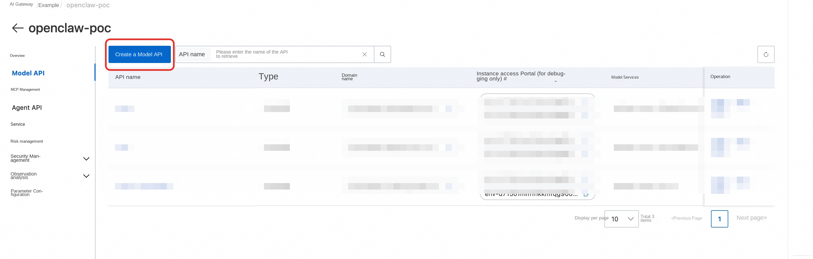
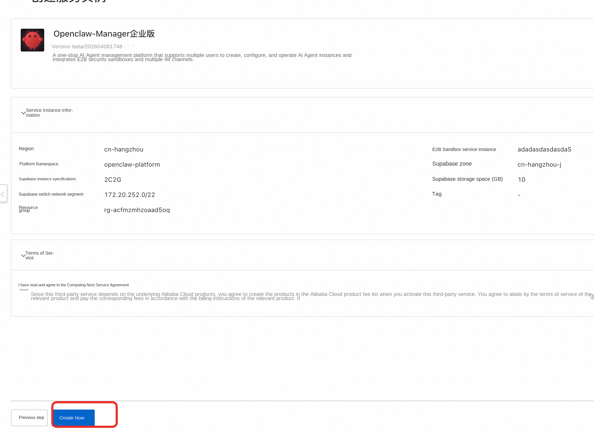
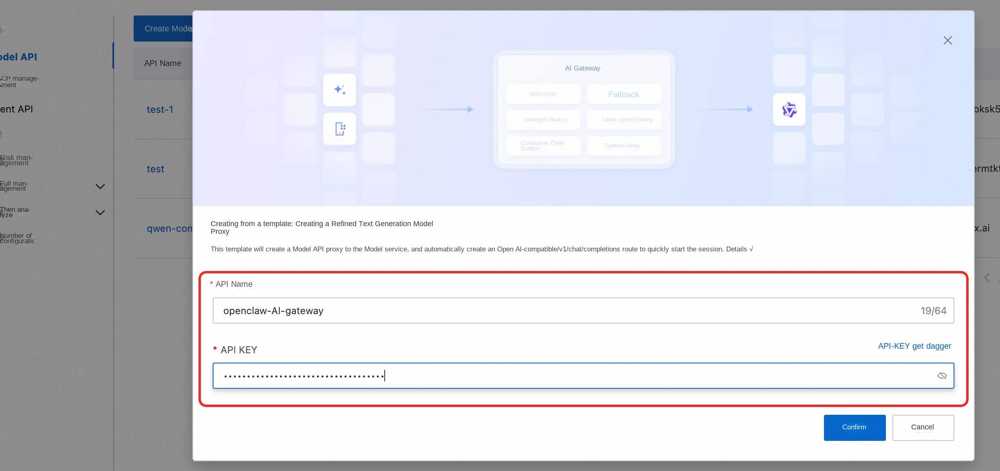
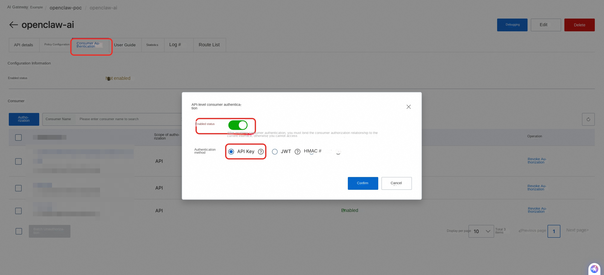
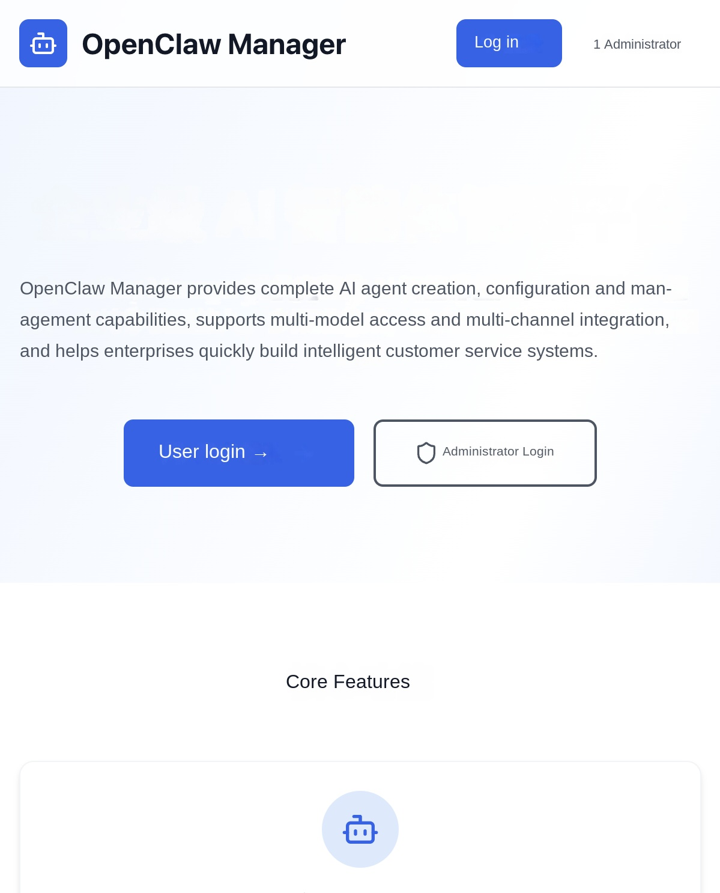
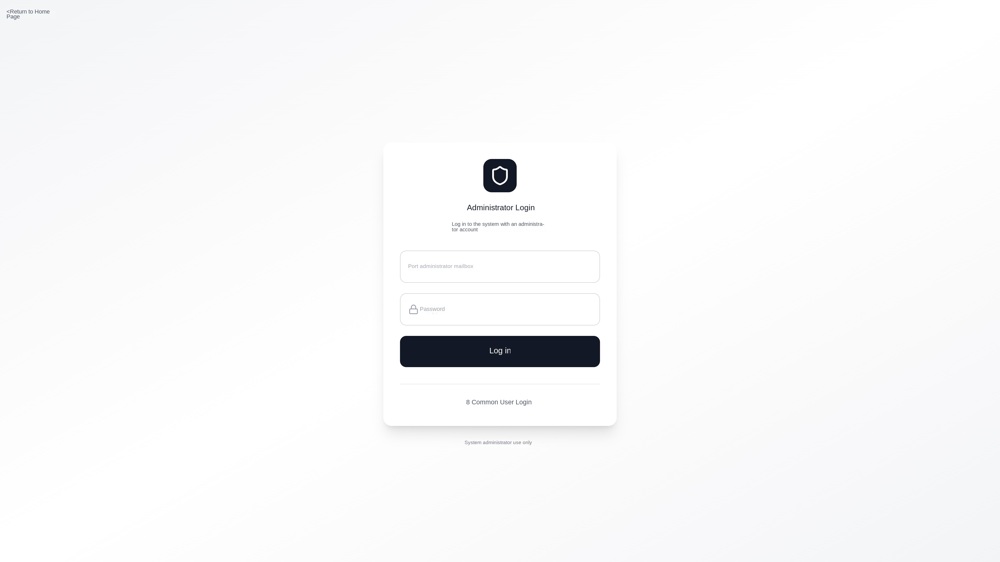
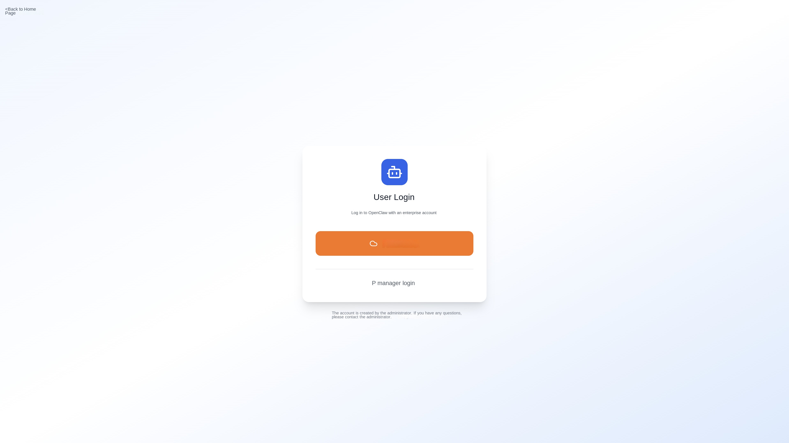
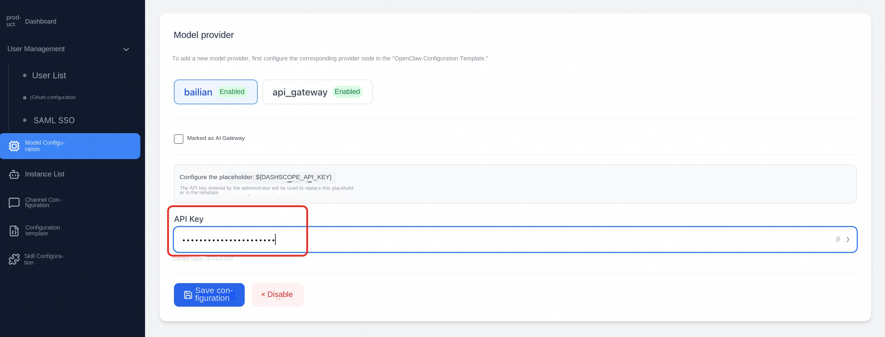
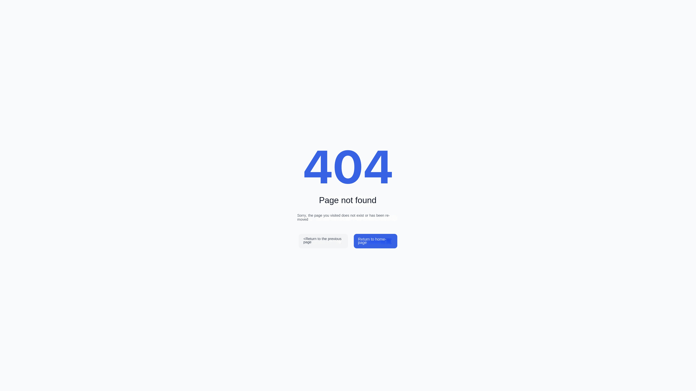

Agent Manager function documentation
Agent Manager is an enterprise-class AI intelligence management platform that provides complete AI intelligence creation, configuration, and management capabilities. The platform supports multiple agent types (such as OpenClaw, Hermes, etc.), and supports multi-model access and multi-channel integration to help enterprises quickly build and manage various AI agents.
1. Computing Nest Deployment
This chapter describes how to deploy the Agent Manager management platform (including the Supabase backend database) on an existing ACS cluster through the Alibaba Cloud Computing Nest (ComputeNest).
1.1 Preconditions
Before deploying the Agent Manager management platform, you must deploy OpenClaw-ACS-Sandbox Cluster Edition. If it has not been deployed, go to the computing nest to create a Sandbox cluster instance:
👉Create OpenClaw-ACS-Sandbox Cluster Edition Instance
1.2 deployment steps
Step 1: Go to the compute nest deployment page
In the Compute Nest console, find the Agent Manager Enterprise service and click Create Instance to go to the parameter configuration page.
Step 2: Fill in the deployment parameters

Complete each configuration as described below:
E2B Sandbox Configuration
| Parameter | Required | Description |
|---|---|---|
| E2B Sandbox Service Instance | Yes | Enter the ID of the compute nest service instance of the deployed OpenClaw-ACS-Sandbox cluster edition. |
| Platform Namespace | No | The namespace of the management platform in the K8s cluster. The default value is 'agent-platform. Generally, it does not need to be modified. |
Supabase database configuration
| Parameter | Required | Default | Description |
|---|---|---|---|
| Supabase the zone | Yes | - | Select the zone of the Supabase instance. It must be in the same region as the ACS cluster. |
| Supabase instance specification | Yes | 2C2G | Database instance specification. Select 2C2G for development and testing. 2C4G or above is recommended for production environments |
| Supabase Storage (GB) | No | 10 | Database Storage Size |
Advanced Network Configuration
| Parameter | Required | Description |
|---|---|---|
| Supabase VSwitch CIDR block | Yes | The CIDR block of the VSwitch (VSwitch) where the Supabase instance is located, for example, '172.20.252.0/22 ' |
⚠* * Important Reminder: The Supabase switch network segment cannot conflict with the existing switch network segment in VPC! * * Before deployment, please check the existing CIDR block of the switch under the current VPC in the Alibaba Cloud VPC console to ensure that the filled CIDR block does not overlap with any existing CIDR block, otherwise the deployment will fail.
Step 3: Confirm information and create

- Verify that all configuration parameters are correct
- Check " I have read and agree to the Computing Nest Service Agreement "
- Click the Create Now button to begin the deployment
The deployment process takes about 5-10 minutes, during which the system will automatically complete the following operations:
-Create a Supabase database instance -Initialize database table structure and administrator account -Deploy the management platform application in the ACS cluster -Configure ALB Ingress load balancing
1.3 deployment verification
After the deployment is complete, you can obtain the access address of the management platform on the service instance details page of the computing nest console. Open the access address and see the login page of the Agent Manager, indicating that the deployment is successful.
Initial administrator account: Email admin@agent.local and password admin123 '. Please change your password immediately after logging in for the first time!
Troubleshooting Common 1.4 Deployment Issues
| Problem | Possible Cause | Solution |
|---|---|---|
| Deployment fails, indicating a CIDR block conflict | Supabase the VSwitch and the existing CIDR block overlap in the VPC | View the existing CIDR block in the VPC console and replace it with a CIDR block that does not conflict with each other. |
| Deployment timeout | Supabase instance creation takes a long time | View the deployment event log in the Compute Nest console, wait or retry |
| The platform page cannot be accessed | The ALB Ingress is not ready yet | Wait for 1-2 minutes and try again, or check the status of Ingress resources in the ACS cluster |
| Database Connection Failed After Login | Supabase Instance Not Fully Ready | Wait for Supabase Instance Status to Change to Running and Retry |
1.5 Service Instance Upgrade
- Go to the supbase console to manually back up the database.
- Create a backup

- Return to the computing nest service instance interface and select the appropriate version to upgrade the service instance.

- Verify that the service instance is upgraded successfully
2. Platform Overview
2.1 Home Page
Visit the platform homepage, you will see the welcome page of the Agent Manager:

The homepage is divided into three areas:
Top navigation bar: Contains the platform Logo, "Login" button (normal user OAuth/SSO login) and "Administrator" button (email password login). Logged-in users will see the User Center and Management Center (Administrator) portals.
Hero area: Shows the platform slogan "Enterprise AI Agent Management Platform" and two main entry buttons: -User Login-Jump to the user login page (OAuth/SSO/email password) -Administrator Login-Jump to the administrator email password login page
Core function introduction: Three function cards show the core capabilities of the platform: -Smart Body Management-Create, configure, and manage multiple types of AI smart bodies (such as OpenClaw, Hermes, etc.) to support multi-instance deployment. -Multiple models-Supports large models of mainstream AI such as Qwen and DeepSeek -User Management-Fine-grained user instance quota management and token quota management
2.2 Roles and Permissions
The platform has two roles:
| Role | Permission Scope |
|---|---|
| administrator (admin) | can access all the functions of the management background: dashboard, user management, agent configuration, sandbox configuration, model configuration, instance management (all users) |
| Common user | You can only access the User Center: View, create, and manage your own Agent instances, configure models and channels |
3. Login System
The platform provides two login portals, respectively for administrators and ordinary users.
3.1 administrator login
The administrator uses the mailbox password to log in, and the entrance is separated from the ordinary user.
Operating Steps:
- Click the " Administrator " button in the upper right corner of the homepage, or directly visit '/admin/login'
- Enter the administrator mailbox and password
- Click the Login button

After successful login, it will automatically jump to the management background dashboard. If a non-administrator account is entered, it will be redirected to the user center.
Initial administrator account: During the first deployment, the system automatically creates an administrator account through the database migration script. The default mailbox is usually admin@agent.local and the password is 'admin123 '. Please change your password immediately after logging in for the first time!
At the bottom of the page, a link is provided to quickly switch to the user login portal.
3.2 User Login
Common users can log on to the following three ways: Email password logon, OAuth third-party logon, and SAML SSO enterprise logon.
Operating Steps:
- Click the Login button or the User Login button on the homepage to go to '/login'
- Select the login method as required: -OAuth Login-Click the corresponding OAuth provider button (for example, "Alibaba Cloud Login" and "GitHub Login") -SAML SSO Login-Click the " Enterprise SSO Login " button to log in through the enterprise identity authentication system -Login with Email Password-In the "Login with Account Password" area at the bottom of the page, enter the email address and password assigned by the administrator, and click " Login "

The layout of the login page from top to bottom is: OAuth button area → SSO button area → separator line ("or login with account password") → mailbox password input form.
Mailbox password login instructions: The user's mailbox and password are created by the administrator in User Management. When the administrator adds a user, select the "mailbox password" authentication method and set the initial password, the user can use the mailbox and password to log in. For details, see 4.2 User Management → Add User.
After successful logon, the instance list in the User Center is automatically redisplayed. The Administrator Login link is also available at the bottom of the page.
4. Administrator function
After logging in, the administrator enters the management background. The navigation bar on the left includes the following function modules.
The admin backend uses the classic layout of the content area on the right side of the left navigation bar:
-Left navigation bar-List all management function menus, collapsible (click top'X ' / '☰'icon toggle) -Top Title Bar-Displays the current page title and current login user name -Bottom sidebar-Display user information and logout button
The left navigation bar contains the following menu items:
| Menu | Path | Description |
|---|---|---|
| Dashboard | '/admin/dashboard' | Overview of platform operation data |
| User Management | '/admin/users' | User List, Add, Bulk Import |
| _Single Sign-On | '/admin/sso-config' | OAuth / SAML SSO configuration (option one) |
| * Mailbox authentication | '/admin/email-auth' | Logon configuration of mailbox password |
| Model configuration | '/admin/models' | Manage AI models and providers (AI gateway/standard API) |
| Instance List | '/admin/instances' | Agent instances of all users |
| Agent configuration | '/admin/agent-types' | Core functions:Agent type management (configuration templates, startup commands, channels, and skills) |
| Sandbox configuration | '/admin/sandboxsets' | Core function: view and manage SandboxSet resources in the cluster |
4.1 Dashboard
Path: '/admin/dashboard'
The dashboard is the home page of the management background and provides a global overview of the platform operation data. The page is divided into three areas from top to bottom.
Basic Statistics Card (Top)
The core indicator cards are arranged horizontally at the top of the page, and each card contains icons, values, and labels:
| Indicator | Icon | Description |
|---|---|---|
| Total users | 👥 | Total number of registered platform users |
| Agent instance | 📦 | Total number of instances created by all users |
| Available Models | 🧠 | Number of AI models currently enabled |
After the AI gateway and SLS logs are enabled, three additional cards are displayed:
| Indicator | Icon | Description |
|---|---|---|
| Active Users Today | 📊 | Number of users with API calls today |
| Number of requests today | 🔄 | Total API calls today |
| Token usage today | 🔑 | Total token consumption of all users today (formatted display, such as 1.2M) |
Recent Agent Instance (Middle)
A white card showing the 5 most recently created instances in tabular form:
| Column | Description |
|---|---|
| Name | Instance name |
| User | User mailbox |
| Agent Configuration | The agent types (such as OpenClaw and Hermes) associated with the instance, as shown by indigo color labels. |
| Status | Green "Running" or gray "Stopped" badge |
| Model | AI model name used |
| Creation time | Creation time in Chinese format |
Today's User Token Consumption Ranking (Bottom)
When the AI gateway and SLS log are enabled, the Token Consumption Ranking List (Top 10) is displayed:
| Column | Description |
|---|---|
| User | User mailbox |
| Total tokens | Total number of input and output tokens |
| Enter a token | Number of tokens sent by the user |
| Output Token | Number of AI replies |
| Number of requests | Number of API calls |
If the AI gateway and SLS have not been configured, this area displays gray prompt text.
AI Gateway Console Entry
If a AI gateway has been configured, the AI Gateway Console blue button appears in the upper right corner of the dashboard. You can go to the Alibaba Cloud APIG console to view more detailed gateway statistics.
4.2 User Management
Path: '/admin/users'
The user management page is used to manage all users of the platform and supports operations such as single addition, batch import, editing, and disabling.
User List
The top left side of the page is a search box (you can search by user name or mailbox), and the right side is " add users " and " batch import " two operation buttons.
The user list is displayed in a table format with the following columns:
| Column name | Description |
|---|---|
| Users | Displays the user name and email address |
| Role | Administrator/Common User |
| Status | Enable/Disable |
| Consumer ID | AI the gateway Consumer ID (displayed only when the AI gateway is enabled. You can click to go to the Alibaba Cloud console) |
| Maximum Instance Limit | Maximum number of instances a user can create |
| Token Used | The number of tokens used by the user today (displayed only when AI Gateway is enabled) |
| Actions | Edit/Reset Password/Enable/Disable |
Pagination is supported at the bottom of the table, with 10 records per page.
Add User
Click the Add User button in the upper right corner and fill in the following information in the pop-up window:
| Field | Required | Description |
|---|---|---|
| User name | Yes | Display name of the user |
| Depending on the situation, the email login method is required, and the OAuth/SAML method is optional (if left blank, a placeholder email will be automatically generated) | ||
| Authentication Method | - | Select 'Email Password', 'OAuth Single Sign-on', or 'SAML Single Sign-on' |
| Password | Depending on the situation | Only the mailbox login method requires (at least 6 digits),OAuth/SAML users do not need a password |
| Role | - | Common User/Administrator |
| Maximum number of instances | - | Default 5 |
Typical scenario: Create account and password for user login
- On the User Management page, click Add User**
- Fill in the user name and email, choose " Email Password " as the authentication method, and set the initial password
- after the creation is completed, inform the user of the mailbox and password
- The user can log in by entering the email and password in the "account password login" area at the bottom of the '/login' page
- After logging in, users can create and manage their own Agent instances in the user center.
Batch import users
Click the " Batch Import " button in the upper right corner to support two methods:
- Upload CSV/JSON file-Select local file upload
- Paste data directly-Paste data in CSV or JSON format in the text box
CSV format example:
'''csv email,password,username,role,maxInstances,authProvider user1@example.com,password123,User1,user,5,email user2@example.com,,User2,user,5,oauth user3@example.com,,User3,user,5,saml '''
Click Download CSV Template to obtain a standard template file. The system is also automatically compatible with the CSV format (with fields such as 'userExternalId') exported by Alibaba Cloud IDaaS, and is automatically recognized as a SAML user.
Each batch supports up to 50,000 users. Success and failure statistics are displayed when the import is complete.
Edit User
Click the Edit icon on the right side of the user row to modify the following user information:
-User Name -Mailbox -Role (administrator/normal user) -Status (enabled/disabled) -Maximum number of instances
4.3 Single Sign-On Configuration
Path: '/admin/sso-config'
The single sign-on configuration page consolidates OAuth and SAML SSO configurations in a unified interface. OAuth and SAML SSO are mutually exclusive configurations (one of two), and the administrator can enable one of them through the toggle button at the top.
Page Composition
-Top Switch Area-Displays the currently enabled SSO mode (OAuth/SAML/Not Enabled), which can be switched -OAuth tab-View and manage OAuth login providers -SAML SSO tab-Configure enterprise SAML 2.0 SSO
4.3.1 OAuth Configuration
Supported OAuth Providers
The platform supports all Supabase built-in OAuth providers, including but not limited:
| Provider | Description |
|---|---|
| Alibaba Cloud (AlibabaCloud) | Use an Alibaba Cloud RAM account to log on |
| GitHub | Log in with a GitHub account |
| Sign in with your Google account | |
| Azure AD | Sign in with Microsoft Azure AD |
| GitLab | Log in with a GitLab account |
| Apple | Sign in with your Apple ID |
| Discord / Slack / Twitter / ... | 20 OAuth providers supported by other Supabase are available |
How to configure OAuth (take Alibaba Cloud as an example)
OAuth needs to be configured on both the Alibaba Cloud console and the Supabase console.
Step 1: Create an OAuth application on Alibaba Cloud
- Log on to the Alibaba Cloud RAM Console and go to OAuth Application Management
- Click Create OAuth Application
- Fill in the application information:
-Application Name: User-defined name, such as 'Agent Manager'
-Application Type: Select WebApp
-Callback address (Redirect URI):Here is the key, fill in the Supabase callback address:
'''
https://
/auth/v1/callback ''' For example: 'https://abc123.supabase.co/auth/v1/callback' - After the creation is complete, record AppId (that is, Client ID)
- On the Application Details page, create a AppSecret (Client Secret). Save it now. The Secret is displayed only once
- In the created application, Add OAuth Scope, and add aliuid and profile
Format description of callback address: Enter 'https://
/auth/v1/callback' uniformly for callback addresses of all OAuth providers '. Supabase will automatically handle callback routes for different providers, so you don't need to set different callback addresses for different providers.
Step 2: Enable Alibaba Cloud OAuth in the Supabase console
- Log in to the Supabase console (the address is configured in the VITE_SUPABASE_URL of '.env')
- Enter Authentication → Providers
- Find AlibabaCloud in the provider list and click Expand
- Turn on the Enable switch
- Fill in the Client ID (AppId) and Client Secret (AppSecret) obtained in the first step
- Click Save to save
- Modify the Site URL, find URL Configuration, and change the Site URL to the access address of the Agent Manager.
Step 3: Verify in Agent Manager
- Enter Agent Manager Management Background → User Management → Single Sign-On → OAuth Tab
- Click the Refresh button in the upper right corner
- Confirm that Alibaba Cloud is displayed in Enabled status
After the configuration is complete, the Alibaba Cloud Login button appears on the user login page ('/login'):
After clicking the button, the user will jump to the Aliyun OAuth authorization page. After using the Aliyun RAM account to complete authorization, the user will automatically return to the Agent Manager and complete login.
Configure other OAuth providers
The configuration process of other OAuth providers is exactly the same, but the first step is to create an application on the corresponding platform:
| provider | address for creating application | callback address to be filled in |
|---|---|---|
| GitHub | GitHub Developer Settings → New OAuth App | 'https:// |
| Google Cloud Console → APIs & Services → Credentials | 'https:// |
|
| Azure AD | Azure Portal → App registrations | 'https:// |
| GitLab | GitLab Applications | 'https:// |
Regardless of the provider, callback address always fills in the Supabase callback URL, which is uniform.
OAuth configuration page function
-Enabled Providers-Displays all enabled OAuth providers and their status as cards -" Supabase Console "button-The page provides a shortcut link to jump directly to the Providers configuration page of the Supabase console. -Refresh button-Manually pull the latest provider enablement status from the Supabase
4.3.2 SAML SSO Configuration
On the Single Sign-On page, switch to the SAML tab to configure enterprise SAML 2.0 single sign-on. After the configuration is complete, the Enterprise SSO Login button appears automatically on the user login page ('/login').
⚠️ Note: The current version of the Supabase deployed through the compute nest does not support the SAML SSO feature. To use SAML SSO, after the deployment is complete, manually go to Supabase Console to upgrade the Supabase instance to a version that supports SAML, and then configure the following.
This section uses Alibaba Cloud IDaaS as an example to describe the complete configuration process. Other IdPs (such as Azure AD, Okta, and so on) process similarly.
SAML Configuration Page Composition
The SAML SSO configuration area contains the following sections:
- SP Information (Configured to IdP)-The information that the Supabase is displayed as an SP(Service Provider) must be copied to the IdP side
- Callback Address Configuration-Set the Site URL to be used after SSO login is completed.
- Configured SSO-View and manage added SAML SSO configurations
- Add SAML SSO-Add SSO configuration entry
Complete configuration process (take Alibaba Cloud IDaaS as an example)
Step 1: Obtain SP information in Agent Manager
Go to the management background → user management → single sign-on → SAML tab, and record the following two values in the " SP information (configured to IdP) " area (click the copy button next to it):
| Field | Description | Example |
|---|---|---|
| Entity ID (Issuer) | SP Entity ID | 'https://abc123.supabase.co/sso/saml/metadata' |
| ACS URL (Callback) | Assertion consumer address | 'https://abc123.supabase.co/sso/saml/acs' |
Step 2: Create a SAML application in the Alibaba Cloud IDaaS console
- Log on to Alibaba Cloud IDaaS Console
- Enter the corresponding IDaaS instance, click Application → Add Application → Select SAML 2.0 Type
- Fill in the application basic information (name, etc.)
Step 3: Configure the SP information of the IDaaS SAML application
In the SAML configuration of the IDaaS application:
- SP Entity ID-Enter the Entity ID obtained in the first step
- SP ACS URL-Fill in the ACS URL obtained in the first step
- NameID Format-Select 'emailAddress'
- NameID Expression-Fill in 'user.email' (Note: write 'user.email' directly, do not write '${user.email}')
Step 4: Add Attribute Declaration
In the Attribute Declaration configuration of the IDaaS application, add the following:
| Property name | Expression |
|---|---|
| 'email' | 'user.email' |
Step 5: Get the IDaaS Metadata URL
After you save the IDaaS application configuration, copy the SAML Metadata URL of the application in the following format:
'''
https://
Step 6: Add SSO configuration in Agent Manager
Return to the single sign-on SAML tab of the Agent Manager:
- Click the Add SAML SSO button in the upper right corner
- Fill in the pop-up window:
| Field | Required | Description | Example |
|---|---|---|---|
| SSO domain name | The domain name of the user's mailbox. SSO is triggered when the user logs on | 'example.com ' | |
| IdP Metadata URL | Yes | IDaaS Metadata URL obtained in Step 5 | 'https://xxx.aliyunidaas.com/api/v2/xxx/saml2/meta' |
| Mailbox attribute name | No | The SAML response contains the attribute name of the mailbox. Default is 'email' | 'email' |
- Click Save Configuration
Step 7: Set callback address
Step 7: In the Callback Address Configuration area, set Site URL to the application address of your Agent Manager (for example, https://your-app.example.com), and then click Save.
Important: If Site URL is not set, SSO will jump to the default page of the Supabase instead of your application after successful login.
Step 8: Authorize users in IDaaS
Go back to the Alibaba Cloud IDaaS console and authorize users or user groups that need to log on using SSO for the SAML application.
Step 9: Validation
Open the user login page ('/login') and you should see the " Enterprise SSO Login (your-domain.com) " button. Click to jump to the IDaaS login page, and automatically return to the Agent Manager after the user logs in successfully using the enterprise account.
If both OAuth and SAML SSO are configured, the user login page displays both the OAuth button and the SSO button, separated by an "or.
Manage Configured SSO
You can view all added SAML SSO configurations in the Configured SSO table, including the domain name, IdP Entity ID, and creation time. Click the Delete button on the right to remove the configuration (with a second confirmation).
4.4 Agent Configuration
Path: '/admin/agent-types'
Agent configuration is the core function of the platform, which defines what kinds of AI intelligences the platform can create. Each agent type has an independent configuration template (JSON/YAML), startup command, sandbox template, channel configuration, and skill configuration, realizing type isolation.
4.4.1 Built-in Agent Type
The system has two built-in Agent types by default, and a corresponding SandboxSet sandbox template is created in the cluster during installation (see 4.5 sandbox configuration):
| Type | Code | Configuration Format | Association SandboxSet | Description | | ------ | ------ | ---------- | ---------------- | ------------ | ------ | | OpenClaw | 'openclaw' | JSON | 'agent-manager-openclaw | AI intelligence based on OpenClaw framework, built-in Gateway, multi-channel integration | | Hermes | 'hermes' | YAML | 'hermes' | agent-manager-hermes | A AI agent based on the Hermes framework with rich personality presets and multi-platform toolsets.
The list page uses a card-based layout. Each card displays the name, code, description, label (sandbox ID, support channel, configuration path), and activation status. The left colored border distinguishes between enabled (green)/disabled (gray). Supports enabling/disabling switching, editing (details page), and deleting (only custom types).
4.4.2 Agent Configuration Details Page
Path: '/admin/agent-types/:id'
Click Edit on the agent card to go to the details page. The details page contains four tabs: Basic Configuration/Configuration Template/Channel Configuration/Skill Configuration.
Basic Configuration Tab
Edit the basic running parameters of the Agent type:
| Field | Description |
|---|---|
| Name/Description | Display information of the agent type |
| Sandbox Template ID | Select a SandboxSet from the drop-down list and click View or Modify to jump to the corresponding SandboxSet details page. |
| Sandbox Timeout | Instance idle timeout (seconds) |
| Configuration Write Path | The absolute path of the configuration file in the sandbox (OpenClaw:'/home/node/.openclaw/openclaw.json';Hermes:'/opt/data/config.yaml') |
| Sandbox user | The user who executes the startup command |
| Start command | The shell script to be executed after the configuration is written. The script can be written heredoc multiple lines. |
| Ready check | JSON configuration, HTTP/TCP detection is supported. After the instance is started, the system determines whether to enter Running. |
| Channel Supported | The switch controls whether to display "Select Message Channel" when creating an instance. |
| Enabled Status | Enable/disable switching. Only enabled Agent types are displayed when you create an instance. |
⚠️ Built-in type: OpenClaw / Hermes is the default supported agent type. The sandbox templates required by these two types have been created in the cluster by default, and the relevant configurations are also fully configured and can be used out of the box.
Configure Templates Tab
Configuration templates are the basis for generating instance configuration files when users create instances. OpenClaw uses JSON format and Hermes uses YAML format to support uploading, editing, downloading, and copying.
The system replaces the placeholder (in the format of '${XXX}') in the template with the actual value at runtime before writing it to the sandbox. Common placeholders:
| Placeholder | Source | Description |
|---|---|---|
| '${MODEL_NAME}' | Select when user creates an instance | Model code, such as 'qwen-max' |
| '${MODEL_PROVIDER}' | User selected when creating an instance | Provider ID, such as 'bailian' |
| '${DASHSCOPE_API_KEY}' | Refined Provider Configuration | Refined API Key |
| '${AI_GATEWAY_DOMAIN}' / '${CONSUMER_API_KEY}' | Alibaba Cloud AI Gateway | Gateway domain name/exclusive consumer key |
| '${LITELLM_PROXY_URL}' / '${LITELLM_API_KEY}' | LiteLLM gateway | Proxy address/user-specific key |
| '${GATEWAY_TOKEN}' etc. | Instance-specific | System-generated |
⚠When adding a provider, pay attention to: The 'apiKeyPlaceholder' / 'domainPlaceholder' filled in when adding a Provider in" Model Configuration "must be exactly the same as the placeholder name used in the template and startup command **, otherwise the model call will fail.
OpenClaw Configuration Template Example (Compact):
JSON { "agents": { "defaults": { "model": { "primary": "${MODEL_PROVIDER}/${MODEL_NAME}"} "workspace": "/home/node/.openclaw/workspace" } }, "models": { "mode": "merge", "providers": { "bailian": { "baseUrl": "https://dashscope.aliyuncs.com/compatible-mode/v1", "apiKey": "${DASHSCOPE_API_KEY}", "api": "openai-completions", "models": [] }, "api_gateway": { "baseUrl": "http://${AI_GATEWAY_DOMAIN}/v1 ", "apiKey": "${CONSUMER_API_KEY} ", "api": "openai-completions", "models": [] } } }, "gateway": { "port": 18789, "auth": { "mode": "token", "token": "${GATEWAY_TOKEN}"} } } '''
Hermes Configuration Template Example (Compact):
yaml model: default: ${MODEL_NAME} provider: alibaba base_url: https://dashscope.aliyuncs.com/compatible-mode/v1
Configuration of Alibaba Cloud AI Gateway (Switch on Demand)
provider: custom
base_url: http://${AI_GATEWAY_DOMAIN}/v1
api_key: ${CONSUMER_API_KEY}
Configuration of LiteLLM gateway (switch on demand)
provider: custom
base_url: ${LITELLM_PROXY_URL}
api_key: ${LITELLM_API_KEY}
terminal: { backend: local, timeout: 180, lifetime_seconds: 300} browser: { inactivity_timeout: 120} compression: { enabled: true, threshold: 0.5, target_ratio: 0.2} memory: { memory_enabled: true, memory_char_limit: 2200} agent: max_turns: 60 personalities: helpful: You are a helpful, friendly AI assistant. concise: You are a concise assistant. Keep responses brief and to the point. technical: You are a technical expert. Provide detailed, accurate technical information. teacher: You are a patient teacher. Explain concepts clearly with examples. platform_toolsets: cli: [hermes-cli] telegram: [hermes-telegram] discord: [hermes-discord] slack: [hermes-slack] code_execution: { timeout: 300, max_tool_calls: 50} '''
⚠* * * When switching model providers: * * When you enable a model provider of the AI gateway class in "Model Configuration", for example, when enabling Alibaba Cloud AI Gateway or LiteLLM, you must switch to the corresponding configuration in the template, otherwise the model call will fail.
Hermes templates have built-in rich 'personalities' (such as 'kawaii', 'pirate', 'shakespeare', etc.) and multi-platform toolsets (Telegram, Discord, WhatsApp, Slack, Signal, HomeAssistant, etc.) that can be tailored on demand.
Start Command Example
OpenClaw (Restart supervisor management services after configuration writing):
bash chown node:node /home/node/.openclaw/openclaw.json && \ supervisorctl restart openclaw '''
Hermes (add write environment variable file and start):
bash cat > /opt/data/.env << 'EOF' DASHSCOPE_API_KEY =${ DASHSCOPE_ API_KEY} CONSUMER_API_KEY =${ CONSUMER_ API_KEY} LITELLM_API_KEY =${ LITELLM_ API_KEY} End of File supervisorctl restart hermes '''
Channel Configuration Tab
The IM message channel template isolated by agent type supports flying books, DingTalk, QQ, and enterprise WeChat. Each channel template contains: channel type, name, description, configuration fields such as '${CHANNEL_CLIENT_ID}'/'${CHANNEL_CLIENT_SECRET}', enabled status. After enabling, the user can select this channel when creating the corresponding agent type instance.
⚠️ Prerequisites: To use the channel feature, you need to be based on an image that contains the channel plugin. The default image does not contain the channel plug-in, and the Docker image needs to be rebuilt.
Skill Configuration Tab
Set the SkillHub registry address associated with the Agent type. Default is 'https://clawhub.ai/',Agent实例会连接到SkillHub查找和调用可用的技能 。
4.4.3 Sandbox Mirror Specification
The built-in OpenClaw and Hermes Agent types use Docker images customized for the platform **. Semantically, each sandbox is packaged with unified process management, configuration file layout, and health detection ports. The corresponding Dockerfile and SandboxSet source files are located in the project 'agent-docker/' directory:
''' agent-docker/ ├── openclaw/ │ ├── Dockerfile# Based on the official openclaw image, supplement the supervisor channel plug-in │ ├── supervisord.conf # openclaw process daemon configuration │-SandboxSet.yaml# Built-in SandboxSet CRD └── hermes/ ├── Dockerfile# Based on the official hermes-agent image, supplementary supervisor ├── supervisord.conf # hermes dashboard dual-process configuration SandboxSet.yaml# Built-in SandboxSet CRD '''
Image build logic
Both Dockerfile follow the same four-step build pattern to ensure that the image can be taken over by the platform:
| Procedure | Description | Specification Requirements |
|---|---|---|
| 1. Select official base image | OpenClaw with ' |
Must be based on official/own agent runtime image, not from 'scratch' or minimalist |
| 2. Install supervisor and tini | 'apt install -y supervisor tini' | The platform uses 'supervisord -n' as PID = 1 to manage multiple processes, which cannot be omitted |
| 3. Append process configuration | 'cat supervisord.conf >> /etc/supervisor/supervisord.conf' | Register the Agent startup command as a supervisor program instead of 'ENTRYPOINT' |
| 4. Define entry | 'ENTRYPOINT ["supervisord", "-n"]' | Fixed supervisor foreground operation, platform hot reload via 'supervisorctl restart |
The OpenClaw image is additionally pre-installed with channel plug-ins such as Feishu/DingTalk/Enterprise Micro/QQ through 'npm pack'. The Hermes image additionally starts a 'hermes dashboard' listener process.
supervisord.conf Specification
'''ini [program:openclaw] command=openclaw gateway run --allow-unconfigured user = node# is the same as the "sandbox user" configured by the Agent. environment=HOME="/home/node",OPENCLAW_NO_RESPAWN="1" redirect_stderr=true stdout_logfile =/proc/1/fd/1# Redirect logs to the container standard output for the platform to collect stdout_logfile_maxbytes = 0 autorestart=true startretries=-1 '''
Key Specifications:
-'user' must be consistent with the Sandbox User field on the Agent configuration page. Otherwise, 'configWritePath' will fail to start when writing files due to permission problems. -Log Redirection must be written to '/proc/1/fd/1' (container standard output) to facilitate K8s collection and SLS log service aggregation. -'autorestart = true' 'startreries =-1 ' This ensures that the Agent process can be automatically pulled up after a crash. This ensures that the Agent process is ready to be checked for fault recovery. -'stopasgroup = true' 'killasgroup = true' Ensure that child processes can be cleaned up when the sandbox is recycled.
Steps to Access Own Agent
If you need to access your own Agent framework (such as Dify, AutoGen, and self-developed Agent), see the official Dockerfile to build your own image. You must comply with the following specifications:
- Based on the Agent runtime image-'FROM
:< tag>', all dependencies of the Agent are pre-installed. - Installation supervisor - 'apt install -y supervisor tini' to ensure that the image has multi-process management capabilities.
- Write supervisord.conf-Define '[program:
]' according to the specification in the previous section, and the user/log path/restart policy are completely aligned with the built-in image. - The ENTRYPOINT is fixed as'supervisord-n'-so that the platform can restart
'hot reload the new configuration through the'supervisorctl in the startup command. - Expose Health Check Port-Enable an HTTP or TCP listening port for the ready check configuration of the Agent.
- Enter SandboxSet.yaml-For more information, see 'agent-docker/*/SandboxSet.yaml'. Modify fields such as 'metadata.name', 'image', 'ports', 'resources', and 'volumeMounts.
- Upload Image and SandboxSet-Push the image to a Registry accessible to the cluster (such as ACR), and then paste YAML in Sandbox Configuration→New Sandbox Configurations.
- In Agent Configuration-When creating an agent type, select the SandboxSet created in the previous step, and enter the Configuration Write Path, Sandbox User, and Startup Command.
💡Recommended practice: Directly copy the 'agent-docker/openclaw' or 'agent-docker/hermes' directory as the starting point, rename it to your own agent name and change 'FROM' or 'command' to quickly adapt.
4.4.4 New Custom Agent Type
When the two built-in frameworks cannot meet the requirements, the administrator can click " New Agent Configuration " in the upper right corner to create a custom type. Two ways are supported:
Method 1: Copy from template (recommended)
Select an existing agent type (such as OpenClaw) in the Template Source field, and the system will automatically copy its configuration template, startup command, and channel configuration as the starting point for the new type, and modify it as needed.
Method 2: Fully Custom
Select no template source and fill in all fields from blank:
| Field | Required | Description |
|---|---|---|
| Code | Yes | Unique identifier of the agent type (in English), such as 'my-agent' |
| Name | Yes | The display name of the agent type |
| Sandbox Template ID | Yes | Select from the SandboxSet drop-down (must be created in Sandbox Configuration) |
| Configure write path | No | The write path of the configuration file in the sandbox |
| Start command | No | Container start command |
| Sandbox User | No | Sandbox runtime user (e. g. 'node', 'root') |
| Support channel | No | Support multi-channel integration |
| Readiness check | No | Readiness check policies in JSON format (HTTP/port listening, etc.) |
After creating, enter the details page and complete the template content in the "Configuration Template" tab.
4.5 sandbox configuration
Path: '/admin/sandboxsets'
Sandbox configuration is the basis of the Agent running environment. Platform manages sandbox templates by using SandboxSet (Kubernetes CRD custom resources in the cluster). Each SandboxSet defines a set of container images, resource specifications, number of copies, and other information for the agent type to reference.
4.5.1 Built-in SandboxSet
By default, two SandboxSet are pre-created in the cluster deployed through the computing nest, corresponding to the two built-in Agent types:
| SandboxSet Name | Associated Agent Type | Description |
|---|---|---|
| 'agent-manager-openclaw' | OpenClaw | OpenClaw runtime image (Node.js supervisord) |
| 'agent-manager-hermes' | Hermes | Hermes runtime environment image (Python supervisord) |
💡Naming convention: The SandboxSet is automatically associated with the agent type through the name pattern 'agent-manager-
. When you add an agent configuration, the Sandbox Template ID selection list displays all SandboxSet under the current namespace.
4.5.2 List Page
The list page displays all the SandboxSet installed in the current cluster in a table format:
| Column name | Description |
|---|---|
| Name | SandboxSet resource name |
| Namespace | The K8s namespace (default) |
| Image | Container image address |
| Number of replicas | Number of replicas of the Sandbox pod in operation |
| Associated Agent Type | The agent type automatically identified by the naming convention |
| Updated | Last edited |
| Actions | View/Delete |
The search box at the top supports searching by name or namespace. The New Sandbox Configuration button is displayed in the upper right corner.
4.5.3 View/Modify SandboxSet
Path: '/admin/sandboxsets/:name'
Click the View or Modify link next to the sandbox template ID in the list row or Agent configuration details page to go to the details page. The details page provides the YAML editor that completely SandboxSet the CRD. You can modify the image, number of replicas, environment variables, storage volumes, and other configurations online.
Operation button:
-Save-Push the modified YAML to the cluster, equivalent to 'kubectl apply' -Copy-Copies the current YAML to the clipboard -Delete-Delete the SandboxSet from the cluster. (A second confirmation is required. A warning is issued if the agent type is still referenced.)
⚠️ Modification Impact: After the modification is SandboxSet, the running instance must be restarted before the new configuration is applied. Before deleting the instance, make sure that no agent type references this template. Otherwise, the agent type cannot create an instance.
4.5.4 New SandboxSet
Click the " New Sandbox Configuration " button in the upper right corner of the list page to enter '/admin/sandboxsets/new' and fill in:
| Field | Required | Description |
|---|---|---|
| Name | Yes | We recommend that you use the 'agent-manager-'naming convention to SandboxSet the resource name to associate it with the agent type. |
| Namespace | No | Default 'default' |
| YAML | is a complete SandboxSet CRD YAML, which can be modified after the built-in agent-manager-openclaw/agent-manager-hermes template is copied. |
After saving, the system will send the CRD to the cluster 'apply'. After successful creation, you can select it from the "sandbox template ID" drop-down of "agent configuration.
4.6 Model Configuration
Path: '/admin/models'
The Model Configuration page is divided into Model Provider area in the upper half and Model Management area in the lower half. The administrator needs to complete the provider configuration and enable before adding specific models.
4.6.1 Provider Classification
The platform divides providers into two broad categories:
| Category | Description | Default support |
|---|---|---|
| AI Gateway | Called through the gateway unified proxy model, supports Consumer management (assigns an independent credential to each user), token statistics, and throttling | Alibaba Cloud AI Gateway · LiteLLM |
| Standard API | Directly call the model vendor API and use the global API Key configured by the administrator | Alibaba Cloud Refinement |
⚠️ Global Constraints: Platform-wide Only one provider is allowed to be enabled at the same time. Enabling one automatically disables other providers. The default providers are displayed as cards, and enabled provider cards are highlighted and show the Enabled status.
4.6.2 Configure Alibaba Cloud Bailian (Standard API)
This is the simplest configuration method. You can call models such as Qwen directly through the Bailian API Key, which is suitable for quick verification or lightweight use.
Operating Steps:
- Click on the "Refined" provider card
- In the API Key input box, enter the Refined API Key (obtained from the Alibaba Cloud Refined Console). The page displays the configuration placeholder prompt: '${DASHSCOPE_API_KEY}'. The API Key filled in will be used to replace this placeholder in the template

- Click Save Configuration to save the API Key
- Click the Enable button to enable the provider
4.6.3 Configure AI Gateway
When a AI gateway provider creates an instance, automatically assigns an independent consumer (Consumer) and access credential to each user, facilitating budget control and auditing. platform built-in two kinds of AI gateway:
Alibaba Cloud AI Gateway
The AI Gateway capability of calling Alibaba Cloud API Gateway provides consumer management, token throttling, and SLS log analysis. For detailed configuration steps, see 4.7 Alibaba Cloud AI Gateway.
LiteLLM Gateway
LiteLLM is an open source Proxy Server that supports hundreds of models (OpenAI / Anthropic / Azure / Qwen/DeepSeek...) Output with a unified OpenAI compatible interface, built-in User / Key separation management, budget control and switching strategy.
Operating Steps:
- Click the "LiteLLM Gateway" provider card to enter the configuration panel
- Fill in the core parameters:
| Configuration Item | Required | Description |
|---|---|---|
| Proxy URL | Yes | Address of the LiteLLM proxy service, such as 'https://litellm.example.com' |
| Master Key | is | the LiteLLM administrator key ('sk-...') used to automatically create users and access credentials. Encrypt storage on save |
| API Key Placeholder | Yes | The default value is '${LITELLM_API_KEY}', which must be consistent with the placeholder in the template/startup command |
| Domain name placeholder | Yes | The default '${LITELLM_PROXY_URL}' must match the placeholder in the template/startup command. ** |
| Budget per user | No | max_budget, maximum cumulative cost per user Key (USD) |
| Budget Cycle | No | 'budget_duration, such as '30d', '7d' |
- Click "Save Gateway Configuration" → "Enable 」. Other providers are automatically disabled when enabled.
💡How it works: When a user creates an instance, the platform calls the LiteLLM '/user/new''/key/generate' to create an exclusive key for the user, substitutes the key and proxy URL into the '${LITELLM_API_KEY}' / '${LITELLM_PROXY_URL}' placeholder and writes the key and proxy URL to the sandbox.
4.6.4 New Provider
If the default provider cannot meet the requirements (such as directly connected to OpenAI, DeepSeek, or self-built vLLM), click the Add Provider button at the top of the list and fill in:
| Field | Description |
|---|---|
| Name/ID | Display name and internal ID of the provider |
| Type | 'API' (standard), 'AlibabaCloudAIGateway', 'LiteLLM' |
| API Key / Base URL | For standard APIs, enter the key and base address. |
| apiKeyPlaceholder | will be replaced with the placeholder name of the actual API Key in the template, such as '${DEEPSEEK_API_KEY}' |
| domainPlaceholder | Placeholder name to be replaced with the base address in the template (if required) |
⚠️ Placeholder matching is the key to adding new providers! The system performs substitution in templates and startup commands by placeholder name. Please confirm before adding a provider: 1. The corresponding provider node (JSON template) or comment example (YAML template) has been added in "agent configuration→Configuration Template. 2. Placeholders used in the template (such as '${DEEPSEEK_API_KEY}') are exactly the same as the 'apiKeyPlaceholder' name in the provider configuration. 3. If the agent needs to use the key in the startup command (such as '.env' file), add the same placeholder synchronously.
4.6.5 Add Model
In the Model Management area, click the Add Model button:
| Field | Required | Description | Example |
|---|---|---|---|
| Model name | Yes | The display name of the model | 'Max' |
| Provider | Yes | Select from the Enabled Provider drop-down list | 'bailian' / 'litellm' / 'api_gateway |
| Model Code | Yes | The identification code of the model | 'qwen-max', 'deepseek-chat' |
| Description | No | Function description of the model | - |
Newly added models are enabled by default, and can be enabled/disabled via the switch button on the card. When you create an instance, you can only select models in the Enabled status. Search is available at the top of the page to search by model name or provider.
Edit/Delete Model
-Edit-Click the Edit button at the bottom of the card to modify the model name, provider, model code, and description. -Delete-Click the delete icon and confirm to permanently delete the model
4.7 Alibaba Cloud AI Gateway
Path: '/admin/gateway'
The AI gateway is a unified proxy layer that is AI invoked. In this system, the AI gateway is configured as a special model provider node, which supports advanced capabilities such as voucher allocation, token statistics, and flow restriction through the Alibaba Cloud AI gateway unified proxy AI model calls.
For more usage of AI Gateway, please refer to Alibaba Cloud documentation: https://help.aliyun.com/zh/api-gateway/ai-gateway/product-overview/what-is-an-ai-gateway
4.7.1 Prerequisites: Create an Alibaba Cloud AI Gateway
Before configuring a AI gateway in the management platform, you need to create and configure a AI gateway in the Alibaba Cloud console.
Step 1: Create a AI Gateway instance
- Access the Alibaba Cloud AI Gateway console: 'https://apig.console.aliyun.com'
- Create a AI gateway instance in the corresponding region. The recommended configuration is as follows:
| Configuration Item | Recommended Value | Description |
|---|---|---|
| Deployment mode | Serverless | No O & M required in POC stage |
| Billing mode | Pay-As-You-Go | Low cost in test phase |
| Region | Same region as business resources | Such as cn-hangzhou and cn-shanghai |
| Network type | Private network (Intranet) must be enabled | Ensure that Sandbox pods can be accessed through the VPC intranet, and public network can be enabled on demand |
| VPC | Select the same VPC as the ACS cluster | View the VPC ID in the ACS console |
| Log Service | Use Log Service | Provides log analysis and dashboards for troubleshooting |
Step 2: Configure the backend AI service
- In the created AI gateway, create the Model API
- Scene templates can be selected to quickly create OpenAI compatible routes for seamless access to OpenClaw
- Set API Name and Refined API Key
- After the creation is successful, turn on the "Enable Authentication" switch in the Model API "Consumer Authentication" and select the "API Key" authentication method
- Configure the domain name of the API (optional) After the API is successfully created, the default access domain name is provided. In production use, you need to transfer the business domain name to the access domain name through DNS service CNAME. Direct access through the access domain name has a daily access limit of 1000 times, the default access domain name can be used for testing, do not directly use the production. You can use this access domain name for testing during the initial verification phase, and then bind the domain name later.
add a domain name in the AI gateway console

Configure the domain name of the API

Configure the DNS resolution of the domain name and transfer the business domain name to the access domain name through the DNS service CNAME.
4.7.2 Configuring the AI Gateway in the Management Platform
After the AI gateway on the Alibaba Cloud side is created, return to the management platform for associated configuration.
Operating Steps:
- Go to the Model Configuration page and select the model provider you want to mark as a AI gateway (e. g. api_gateway)
- Check the Mark as AI Gateway checkbox and click Enable Gateway. The dedicated configuration panel of the AI gateway will be expanded.

- Configure Alibaba Cloud Credentials: -AccessKey ID: the AccessKey ID of the Alibaba Cloud account -AccessKey Secret: the AccessKey secret of the Alibaba Cloud account. -Click Save Certificate
The credentials saved here are used to obtain and modify the configuration of the AI gateway. The following RAM policies are required for this credential: 1. AliyunAPIGFullAccess: Permissions to manage Cloud Native API Gateway 2. AliyunLogReadOnlyAccess: Read-only access to Log Service
- Configure Gateway Parameters:
| Configuration Item | Required | Description | | -------- | --------------------------------------------------------------------------------------------------------------------------------------------------- | | Gateway ID | Yes | The ID of the AI gateway instance, such as gw-xxx | | HTTP API ID | Yes | The ID of the Model API, such as' api-xxx '| | Region | Yes | The region where the AI gateway is located | | Environment ID | - | Fill in the Gateway ID and HTTP API ID and save them. The system automatically obtains them or manually modifies them. Used to identify the publishing environment of the AI gateway | | AI Gateway Domain Name | - | After you enter the Gateway ID and HTTP API ID, the system automatically obtains the first domain name. You can also modify it manually. The domain name is the actual request address of the OpenClaw instance to call the AI gateway, which can be viewed in the Model API Usage Guide of the AI gateway console. We recommend that you use a custom domain name in the production environment. For the configuration steps, see "Configuring Backend AI Services".
- Click Save Gateway Configuration
The "Open Console" link is provided in the configuration panel, and you can jump to the Alibaba Cloud AI Gateway console with one click.
4.7.3 Effect of AI Gateway Enabled
When the AI gateway is enabled, the system has the following capabilities:
-Automatic Credential Assignment-When a user creates an Agent instance, the system automatically creates a consumer in the AI Gateway and assigns access credentials to the user. -Token Statistics-The system automatically collects token consumption data of each user through Alibaba Cloud Log Service (SLS) -Token Limits-You can restrict the use of tokens at the global or individual level (see 4.8.1 Token Statistics for details).
4.8 Token Statistics and Current Limiting
After the AI gateway is enabled, the system can view the user's token consumption and configure the flow limit policy to control the usage.
4.8.1 Token Statistics
Administrators can view token consumption data in the following locations:
-User Management Page-The "Token Consumption Today" and "Token Consumption Last 30 Days" columns in the user list directly display the consumption of each user -Administrator Dashboard-Displays the number of active users today, the number of requests, the total token consumption, and the consumer token consumption ranking (Top 10)

Token statistics are provided by Alibaba Cloud SLS Log Service and are available only when the AI gateway is enabled. If the user is not associated with a consumer (the Consumer ID column is displayed as "-"), the token consumption of the user cannot be counted.
4.8.2 Global Current Limit Configuration
The global throttling policy takes effect for all users and is set in the AI gateway configuration panel.
Operating Steps:
- Go to the Model Configuration page and select the provider that has been marked as a AI gateway
- Find the "Token Limiting Policy" area at the bottom of the AI gateway configuration panel
- Set current limiting parameters: -Daily Token Limit per User: The unit is tokens/day. Leave this blank or enter 0 to indicate no limit. -Upper Token Limit Per User Per 30 Days: The unit is tokens/30 days. Leave this blank or enter 0 to indicate no limit. -Two policies can take effect at the same time

- Click Save Current Limiting Configuration
- After saving, the page will display the current effective current limit status, such as: "Daily 1,000,000 tokens 40,000,000 tokens every 30 days 」
4.8.3 Individual Current Limit Configuration
In addition to global throttling, administrators can set independent throttling policies for individual users. Individual throttling policies take precedence over global policies.
Operating Steps:
- Enter the User Management page
- Find the target user in the user list and click the " Token Limit " button in the operation column (this button will only be displayed for users associated with the Consumer ID)
- In the pop-up "User Token Limit" dialog box: -The page will display the global flow restriction policy as a reference (for example, "Daily: 1,000,000 tokens Every 30 days: 40,000,000 tokens") -Fill in the personal current limit value of the user: -Daily Token Limit (Individual): unit is tokens/day -Maximum Token Per 30 Days (Individual): unit is tokens/30 days -Leave blank or enter 0 to indicate that no personal limit is set, and the user will inherit the global limit policy. -After setting personal restrictions, the user is subject to personal restrictions
- Click Save Current Limiting Configuration
- The top of the dialog box will show the user's "current effective token limit" in real time, and indicate the source of each limit ("personal" or "global")

Example: If a user's global daily limit is 1,000,000 tokens and the administrator sets the personal daily limit to 2,000,000 tokens, the effective daily limit for the user is 2,000,000 tokens (personal), and the 30-day limit is still 40,000,000 tokens globally.
4.9 instance list (administrator view)
Path: '/admin/instances'
Administrators can view and manage Agent instances created by All Users.
List function
-Search-Search by instance name -User Filtering-Filters instances by user name (only for administrators) -Paging -10 records per page, support page turning
Table Column Description
| Column name | Description |
|---|---|
| ID | Sandbox ID |
| Name | Instance name and description |
| User | The user of the instance (column unique to the administrator) |
| Agent Configuration | The agent type associated with the instance, displayed in indigo color. |
| Status | Running/Stopped/Starting/Stopping |
| Model | AI model used |
| Creation time | Instance creation time |
| Actions | View Details/Start/Stop/Delete/View Pod |
Administrator-specific actions
-View Pod-If the ACS cluster ID is configured, you can directly go to the Alibaba Cloud Container Service console to view the pod details of the instance. -View Details-On the Instance Details page, you can view additional information such as the instance user.
5. User Functions
Ordinary users enter the user center after logging in. The user center also uses the layout of the content area on the right side of the left navigation bar. The navigation bar contains two menu items: Instance List and Profile.
The user name, role (common user), and logout button are displayed at the bottom of the left navigation bar.
Note: If you do not log in and access '/user/instances' directly, the page displays 404. Please complete the login through the login page first.

5.1 instance list
Path: '/user/instances'
The main page of the user, which displays all Agent instances created by the current user.
List function
-Search-In the upper-left corner search box, search by instance name -Create-The Create Instance button in the upper right corner creates a new instance -Paging -10 records per page, page navigation at the bottom
Table Column Description
| Column name | Description |
|---|---|
| ID | Sandbox ID |
| Name | Instance name |
| Agent Configuration | The agent type associated with the instance |
| Status | Running/Stopped |
| Model | AI model used |
| Created | Created |
| Operation | View Details/Start Stop/Delete |
Operation button description (from left to right)
| Icon | Action | Description |
|---|---|---|
| 👁Eyes | View details | Go to the instance details page to view and modify configurations |
| ▶/⏹Play/Stop | Start/Stop | Green is start, orange is stop; the rotation load icon will be displayed during operation |
| 🗑Delete | Delete | Red, permanently delete the instance and associated Sandbox, confirm |
5.2 to create an Agent instance
Path: '/user/instances/create'
The Create page has the Back to List link at the top and the body is a form card.
Operation steps
- On the Instance List page, click the blue " Create Instance " button in the upper right corner.
- Fill in the following information:
| Field | Required | Description |
|---|---|---|
| Select Agent Configuration | Yes | Display all enabled Agent types (such as OpenClaw and Hermes) in card form. Click to select one. Display name, description and category label for each card (built-in/custom) |
| Instance Name | Yes | A meaningful name for the instance, such as "Customer Service Assistant", "Sales Robot" |
| Select AI Model | Yes | Drop-down selection box to select one from the list of available models configured by the administrator (displays the "Model Name-Provider" format) |
| Select Message Channel | No | Drop-down selection box to dynamically load available channels based on the selected agent type. Default value: Do not configure temporarily. |
- If the message channel is selected, the form will open a "channel configuration" area, you need to fill in the corresponding Client ID and Client Secret
- Click the " Create Instance " button in the lower right corner to submit (the "Create" button will display the loading animation)
On creation, the system automatically completes the following:
-Create a sandbox environment based on the selected Agent type -Generate instance configuration based on agent configuration template and selected model -if AI gateway is enabled, automatically create a AI gateway consumer for that user and assign access credentials -Start the Agent service
Wait for the instance status to change to Running. After the instance is created, the instance details page is automatically redisplayed.
Use Tips
At the bottom of the page is a blue tip card with the following suggestions: -Create multiple instances for different usage scenarios -Select Agent configuration and appropriate AI model -After creation, you can modify the configuration at any time on the details page.
5.3 instance details and configuration
Path: '/user/instances/:id'
The instance details page is divided into three card areas: basic information, model configuration, and channel configuration. At the top of the page, there is a Back to List link on the left and action buttons on the right.
Top operation button
There are two buttons in the upper right corner of the page:
| Button | Description |
|---|---|
| Start/Stop | Blue (start) or orange (stop) buttons to control the running state of the instance |
| Save Configuration | Blue button that becomes clickable when model or channel configuration is modified |
Basic Information Card
The core information of the instance is displayed in a two-column grid:
| Field | Description |
|---|---|
| ID | Sandbox unique identifier (in the format of 'namespace -- podname') |
| Name | Instance name |
| Status | Green "Running" or gray "Stopped" badge |
| Creation Time | Instance creation time (Chinese format) |
| Last Active | The last active time of the instance. If not, None is displayed. |
| User | The user name of the instance is displayed only in the administrator view. |
| Application access link | The access URL after the instance is running. The blue clickable link opens in a new window. |
| /etc/hosts configuration | In the development mode, the code blocks with green characters on the black background need to be added to the local hosts file. |
| View Container | Only in the administrator view, go to the Alibaba Cloud console to view the pod. |
Model Configuration Card
Used to modify the AI model used by the instance:
- Select a new model in the Select AI Model drop-down menu (displays the Model Name (Provider) format)
- After modification, an orange prompt text will appear below: "Modified, click Save Configuration Effective"
- Click the Save Configuration button at the top of the page to save your changes
Channel Configuration Card
Used to modify the message channel of the instance:
- Select the channel type (such as Feishu, DingTalk) in the "Select Channel" drop-down menu, and select "Not Configuring" to clear the channel
- Select the channel and expand the configuration area, including Client ID (text input) and Client Secret (password input)
- The placeholder of the Client Secret input box is "Leave blank and remain unchanged", * only need to be filled in when changing the password*
- After modification, an orange prompt text will appear below. Click the " Save Configuration " button to save
5.4 Pause and Restart an Instance
When an Agent instance is not needed, it can be paused to free up computing resources. After the instance is suspended, the data and memory are retained.
Pause Instance
- Locate the target instance on the Instance List page
- Click the Stop button (orange) in the Actions bar
- The instance status will change to "Stopped" and display "Stopped" when finished 」
Restart the instance
A suspended instance can be restarted at any time. After recovery, the configuration, data, and historical memory of the instance remain intact.
- On the Instance List page, locate the target instance with a status of Stopped
- Click the Start button (green) in the Actions bar
- The instance status will change to "Starting" and display "Running" when finished 」
Overview of Token Usage on the 5.5 User Side
If AI Gateway is enabled, a token usage overview card is displayed at the top of the user instance list page, including:
| Indicator | Description |
|---|---|
| Number of Instances | Number of Instances owned by the current user |
| Token usage today | The number of tokens used today and the daily limit progress bar |
| Token usage in recent 30 days | Token usage in recent 30 days and 30-day limit progress bar |
The progress bar changes color according to usage: green (<70%), amber (70%-90%), red (≥ 90%).
6. FAQ
Q1: Is there no login method available on the user login page?
A: The user logon page always supports email password logon (bottom of the page) without additional configuration. If OAuth or SSO login is also required, the administrator needs to complete the configuration on the "User Management → Single Sign-on" page:
-Configure OAuth: Enable an OAuth provider (such as Alibaba Cloud) in Authentication → Providers of the Supabase console, create an OAuth application on the corresponding platform, and set the callback address to 'https://
For mailbox password login, the administrator must first create an account for the user in User Management (select the mailbox password authentication method) before the user can log in using the mailbox and password.
Q2: What if the instance creation fails?
A: Please check the following: 1. Whether the user has reached the maximum number of instances (default 5), you can contact the administrator to adjust in user management. 2. Whether the backend API service and E2B service are connected normally 3. Whether at least one AI model has been added and enabled in the Model layout 4. Whether at least one Agent type is enabled in the Agent Configuration 5. Determine whether the write configuration in the sandboxset is correct. For non-root users, please ensure that the write path is the correct configuration.
Q3: Token usage statistics are not displayed?
A: Token usage statistics depends on AI Gateway and SLS. The administrator must correctly configure and enable the gateway on the AI Gateway page, and the Aliyun AccessKey must have the read permission of SLS. When the AI gateway is not enabled, token-related metric columns are not displayed in dashboards and user management.
Q4: How do I access a running instance?
A: After the instance is started, the Application Access Link is displayed on the instance details page 」. Click the link to open the Agent interface in a new window. If it is a development environment, the details page may display the '/etc/hosts' configuration, which needs to be added to the local hosts file before it can be accessed normally.
Q5: What AI models are supported?
A: The platform itself does not limit the model type. Administrators can freely add model providers and models on the Model Configuration page. Common models include: -Qwen Series (Tongyi Thousand Questions) -DeepSeek series -Other models compatible with OpenAI API format
Q6: Where can I get the Client ID and Client Secret in the channel configuration?
A: According to different channel types, go to the corresponding platform to create a robot application and obtain the following information: -Flying Book-Flying Book Open Platform -DingTalk-DingTalk Open Platform -Enterprise WeChat-Enterprise WeChat Management Background -QQ-QQ Open Platform
Q7: Supabase page did SAML SSO jump to after logging in instead of the application?
A: Go to Management Background → User Management → Single Sign-On → SAML Tab, set the Site URL to your application address (such as https://your-app.example.com) in the "Callback Address Configuration" area, save it and try again.
Q8: OAuth login button does not appear?
A: The OAuth provider needs to be enabled in the Supabase Console instead of the Agent Manager. Please: 1. Log in to the Supabase console → Authentication → Providers 2. Find the corresponding provider (such as AlibabaCloud) and turn on the Enable switch 3. Enter the Client ID / Client Secret of the corresponding platform 4. After saving, return to the Agent Manager "single sign on→OAuth tab" Click "refresh" to confirm the status 5. Visit the user login page ('/login') again, and the corresponding login button should have appeared
Q9: How to fill in the Alibaba Cloud OAuth callback address?
A: When you create an OAuth application in the RAM console, enter the callback address (Redirect URI):
'''
https://
For example 'https://abc123.supabase.co/auth/v1/callback '. Supabase automatically handles the callback logic for all OAuth providers, all of which use the same callback address.
Q10: Can I configure multiple login methods at the same time?
A: OAuth and SAML SSO are mutually exclusive configurations (one of two options). The administrator selects one of them on the Single Sign-On configuration page. The mailbox password login is always available, alongside OAuth/SAML. You can enable multiple OAuth providers (such as Alibaba Cloud GitHub Google) at the same time, but you cannot enable OAuth and SAML SSO at the same time.
Q11: What agent types does the platform support?
A: Platform provides two built-in Agent types: OpenClaw(JSON configuration) and Hermes(YAML configuration). The sandbox templates agent-manager-openclaw and agent-manager-hermes are automatically created in the cluster during deployment. In addition, the administrator can also add a type in "Agent Configuration" through "Copy from Template" or "Custom Create", and create a corresponding SandboxSet in "Sandbox Configuration" to support any Agent framework compatible with E2B sandbox.
Q12: Model call failed after adding model provider?
A: The probability is that the placeholder does not match. The 'apiKeyPlaceholder' / 'domainPlaceholder' entered when adding a provider must be the same as the placeholder name used in the Agent configuration template and startup command. Otherwise, the template variable replacement will skip this provider. See 4.6.4 New Provider.
Q13: Does the new configuration not take effect after modifying the SandboxSet?
A: The running instance uses the sandbox environment before modification. After editing and saving the SandboxSet YAML in the sandbox configuration, click Stop on the instance corresponding to the instance list and then Start to apply the new configuration.
document version: v2.1 | update date: 2026-04-23